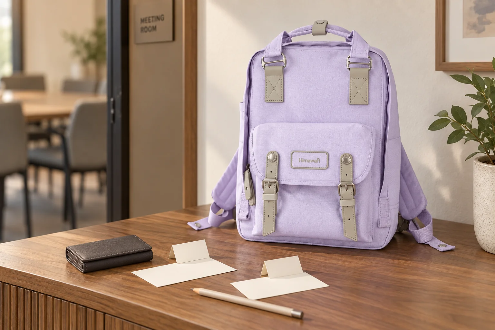

명함을 주고받는 날의 백팩, 두 명함집을 꺼내는 순서

행사장에 도착해 이름표를 받고, 누군가에게 인사를 건네며 백팩을 잠깐 여는 장면을 생각해봅니다. 안에는 발표 자료와 개인 소지품, 나눠줄 명함이 함께 있습니다. 명함 한 장을 꺼내려다 파일까지 들고 있어야 한다면 대화가 시작되는 순간 손에 남는 물건이 많아집니다. 이날의 가방은 물건을 넣은 모습에 더해, 서 있는 자리에서 작은 묶음을 어떻게 다룰지까지 생각해 고를 수 있습니다.
건넬 명함과 받을 명함은 가방 안에서 서로 다른 흐름을 가집니다. 출발할 때 준비한 명함집은 쓰면서 내용이 줄고, 받은 명함을 둘 묶음은 행사 중 채워집니다. 한 명함집의 안쪽을 구분해서 쓰거나 두 보관함을 나누는 방법 가운데 실제로 다루기 편한 쪽을 고릅니다. 명함에 어떤 메모를 남길지는 나중에 정하고, 우선 종이를 흩어 넣지 않을 위치를 마련합니다.
인사하기 전에 꺼낼 수 있는 묶음
입장 자료와 명함집을 같은 포켓에 둘 계획이면 먼저 사용할 물건의 순서를 봅니다. 접수대에서는 입장 확인이 필요하고 대화 자리에서는 명함집이 필요할 수 있습니다. 둘을 한꺼번에 손에 쥘 필요가 없다면 사용한 자료를 먼저 되넣고 다음 물건을 꺼낼 수 있습니다. 한 포켓의 작은 종이가 명함집에 붙어 따라오는지도 집에서 확인하면 됩니다.
명함집은 백팩에 넣은 상태로 열기보다 통째로 꺼내서 다룰 구성을 생각합니다. 가방을 몸 앞으로 옮기거나 안정된 곳에 내려놓은 뒤 명함집을 잡을 수 있는지 봅니다. 어깨에 멘 채 뒤쪽 지퍼를 더듬어야 하는 위치가 늘 편한 것은 아닙니다. 자주 열지 않아도 되는 큰 자료와, 대화 사이에 꺼낼 작은 물건을 같은 깊이에 두지 않아도 됩니다.
가상의 행사 일정에서 명함을 여러 번 건넬 예정이라면 명함집을 잠시 직접 들고 있을 수도 있습니다. 이때 백팩에는 명함집이 돌아갈 자리를 남깁니다. 손에 들고 나온 동안 그 빈틈에 받은 안내서를 넣으면 다시 보관할 때 배치를 바꿔야 합니다. 명함집을 가방 밖에 걸어두는 방식은 해당 소품에 안내된 용도가 있는지 확인한 뒤 선택합니다.
받은 명함의 입구는 따로 남긴다
받은 명함을 지갑이나 휴대전화와 같은 포켓에 한 장씩 밀어 넣으면, 다른 물건을 꺼낼 때 종이가 움직일 수 있습니다. 받은 것을 모을 작은 보관함을 준비했다면 명함이 들어간 뒤 자연스럽게 닫히는지 봅니다. 빈 보관함의 얇은 모습만 보고 자리를 정하지 말고 어느 정도 채워진 두께도 생각합니다. 행사 후반의 가방 모습까지 고려하는 것입니다.
두 명함집을 사용한다면 겉에서 구별할 수 있어야 합니다. 크기나 표면이 원래 다르면 그 차이를 쓰고, 비슷하면 가방 안에서 놓일 방향을 나눌 수 있습니다. 매번 두 개를 모두 열어야 한다면 표시나 배치를 바꿔볼 만합니다. 자신의 명함과 받은 명함을 잘못 건넨 순간을 만들지 않도록, 내용물과 보관함의 역할을 함께 정해둡니다.
Himawari No.194L의 외부 크기는 28 × 39 × 15cm로 안내되어 있습니다. 행사에 가져갈 백팩 후보라면 큰 자료와 작은 보관함이 각각 놓일 자리를 확인합니다. 큰 자료를 넣은 다음 작은 보관함을 꺼낼 경로가 남는지 확인합니다. 명함집은 실제 사용 구성에서 꺼낼 위치를 고릅니다.

가방을 내려놓을 수 있는 자리에서 바뀌는 일
좌석이나 안내된 테이블에 도착했다면 백팩을 받칠 자리를 확인합니다. 이제 큰 자료를 꺼낼 차례라면 명함집을 먼저 원래 위치로 돌릴 수 있습니다. 테이블 위의 종이와 섞이지 않게 개인 보관함을 닫고, 발표 자료나 노트를 꺼냅니다. 명함집을 잠깐 비워 놓았다는 이유로 그 자리에 다른 종이를 계속 쌓지 않으면 다시 일어날 때 정리할 범위가 줄어듭니다.
받은 명함을 살펴볼 필요가 있어도 가방의 큰 수납칸을 그대로 열어둔 채 모두 펼칠 필요는 없습니다. 명함 묶음만 꺼내서 확인한 뒤 다시 담을 수 있습니다. 명함을 받기 위해 가방을 여는 행동과, 앉아서 기록을 정리하는 행동에 같은 배치를 강요하지 않습니다. 서서 사용할 작은 보관함과 앉아서 펼칠 노트의 위치가 다르면 각각 필요한 공간도 분명해집니다.
행사 중 배포 자료나 기념품이 더해지면 명함집의 길이 막힐 수 있습니다. 먼저 꺼낼 것을 계속 위쪽에 올리는 방식만으로 해결하기 어려우면 새 자료를 별도 묶음으로 나눕니다. 명함집이 작은 물건이어서 큰 자료 사이의 틈에 들어가더라도, 잡을 면까지 사라진다면 다시 찾는 데 시간이 듭니다. 물건을 넣기 전과 후에 같은 보관함을 골라 꺼낼 수 있는지 봅니다.
귀가 직전에는 테이블에 둔 명함집과 개인 노트가 가방으로 돌아왔는지 확인합니다. 사용한 의자나 옷 주머니에 잠시 옮겨둔 물건도 회수할 범위에 넣습니다. 명함의 장수를 기억으로 맞추기보다 보관함과 사용한 자리를 대조하는 방식입니다. 다른 참가자의 자료가 섞여 있다면 자신의 묶음과 구분한 뒤 닫습니다. 행사장에서 가져온 물건이 모두 같은 용도는 아닙니다.
집에서는 받은 명함 묶음을 통째로 꺼내 정리할 자리로 옮깁니다. 이후의 연락이나 기록 작업을 백팩 안의 포켓에서 계속 진행하지 않아도 됩니다. 가방에는 다음 외출에 필요한 자신의 소지품을 남기고 명함집의 내용도 실제 상태에 맞춰 준비합니다. 다음 행사에 같은 백팩을 쓴다면 명함집을 꺼내기 위해 들고 있었던 다른 물건이 무엇이었는지 참고할 수 있습니다.
건넬 명함집과 받은 명함집이 돌아갈 자리가 각각 보이면 대화 사이에 정리할 범위가 작아집니다. 모든 인사를 가방을 연 채 이어갈 필요도 줄어듭니다. 다음 준비에서는 행사장에서 필요한 접수 자료와 명함집을 차례로 꺼내보고, 사용한 뒤 어느 지퍼를 닫을지까지 해봅니다. 명함을 몇 장 넣었는지에 더해, 그것을 주고받는 동안 백팩을 어떻게 다룰지가 선택의 조건으로 남습니다.